At times, a driver must yield to others. There are certain rules to help determine who has the right-of-way; however, if the other driver doesn’t follow these rules, give him/her the right-of-way. Remember, in every situation, right-of-way is something given, not taken. All drivers should know and understand the laws that determine who has the right-of-way.
| Offense | Penalty |
|---|---|
| Driver commits any traffic offense of which failure to yield the right-of-way to another vehicle is an element and causes bodily injury to another. | A fine of $500 to $2,000. |
| Driver causes serious bodily injury to another. | A fine of $1,000 to $4,000. |
Right-of-Way at Intersections
Intersections Controlled by Signs and Signals
When signs and signals control traffic at an intersection, you must obey them. Know the meaning of each sign and signal. See Chapter 5 for more information.
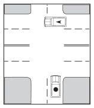
Single or Two-Lane Road Intersecting a Multi-Lane Road
If you are driving on a single or two lane road that intersects with a divided road or road with three (3) or more lanes, you must yield the right-of-way to vehicles traveling on the divided or three (3) or more lane road.
Unpaved Road Intersecting a Paved Road
If you are driving on an unpaved road that intersects with a paved road, you must yield the right-of-way to vehicles traveling on the paved road.
Intersections Not Controlled by Signs, Signals, Multi-Lanes, or Pavement
When approaching this type of intersection, yield the right-of-way to any vehicle that has entered or is approaching the intersection on your right. If the road to your right is clear or if approaching vehicles are far enough from the intersection to make your crossing safe, you may proceed. Since there are not any traffic-controls at this intersection, make sure there are no approaching vehicles from the left. You may legally have the right-of-way but be sure the other driver yields to you before you proceed.
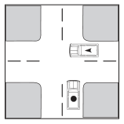
Turning Left
When turning left, always yield the right-of-way to any vehicle coming straight through from the other direction.
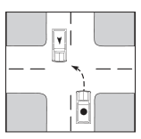
Private Roads and Driveways
When entering or crossing a road, street, or highway from a private road, alley, building, or driveway, you must stop prior to the sidewalk and yield the right-of-way to all approaching vehicles and pedestrians.
T-Intersection
When approaching an intersection of a through street traveling from a street that ends at the intersection, you must stop and yield the right-of-way to vehicles on the through street.
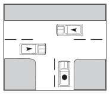
Enter or Leave Controlled-Access Highway
The driver traveling on a frontage road of a controlled-access highway must yield the right-of-way to a vehicle:
- Entering or about to enter the frontage road from the highway; and
- Leaving or about to leave the frontage road to enter the highway.
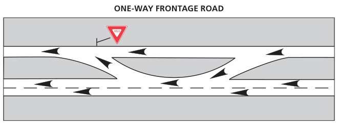
ONE-WAY FRONTAGE ROAD · YIELD
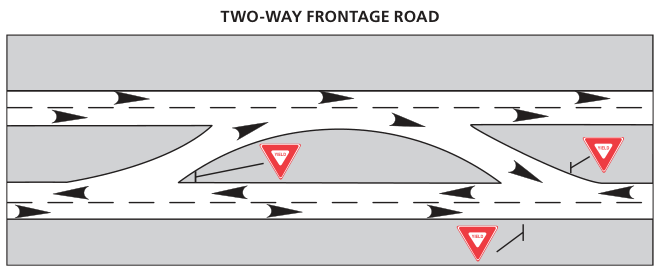
TWO-WAY FRONTAGE ROAD · YIELD
Driving on Multiple-Lane Roads
On a road divided into three or more lanes with traffic moving in the same direction, a vehicle entering a lane of traffic from the right must yield the right-of-way to a vehicle entering the same lane of traffic from the left.
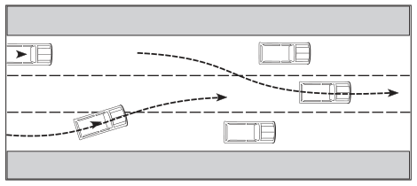
Railroad Grade Crossings
When approaching a railroad grade crossing, stop between 15 and 50 feet from the nearest rail if:
- A clearly visible railroad signal warns of an approaching train
- A crossing gate is lowered or a flag person warns of an approaching train
- A driver is required to stop by an official traffic-control device or a traffic-control signal
- An approaching train is within about 1,500 feet of the crossing. The train will produce an audible signal to identify the immediate hazard.
- An approaching train is visible and in close proximity to the crossing
You are required to stop at a railroad grade crossing and remain stopped until allowed to proceed or it is safe to proceed.
A person who fails to obey the law regarding railroad grade crossings is subject to a fine of $50 to $200.
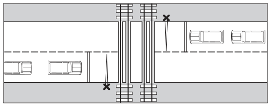
Additional Safe Driving Procedures at Railroad Crossings
- If a railroad crossing is marked only with a cross-buck sign or reduce speed sign, then look both ways, and listen for a whistle. If a train is approaching, stop. If a train is not approaching, proceed with caution.
- If red lights are flashing at a railroad crossing, stop. If a train is approaching, remain stopped until the train passes and the lights stop flashing.
- If the railroad crossing gates have been lowered, stop. Remain stopped and wait until the train passes and the gates are raised before crossing.
- Be sure the tracks are clear before you proceed to cross. There may be two or more sets of tracks. One train could be blocking the view of another.
- Never stop on the tracks. If your car stalls on the tracks and you cannot restart it, get out and try to push the car off the tracks. If you cannot push the car off the tracks, get help. If a train is approaching and your vehicle is stalled, get out quickly and move away from the tracks. Run toward the approaching train to the side of the tracks and avoid flying debris.
- Remember, trains do not and cannot stop at crossings. Trains always have the right-of-way.
- Audible signs or whistles may be difficult to hear when approaching railroad crossings. Roll your windows down, turn your radio down, and listen carefully.
If you encounter a railroad grade crossing signal problem, call the Texas Department of Public Safety Communications Center at (800) 772-7677 or call your local police department or county sheriff’s office. Each railroad crossing signal has an identifying number. Please note the number and be ready to provide it when reporting a problem.
Highway-Rail Grade Crossings Emergency Notification System (ENS)
The mission of the Federal Railroad Administration (FRA) is to enable the safe, reliable and efficient movement of people and goods for a strong America, now and in the future.
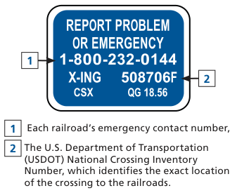
1 · 2 · 1 Each railroad’s emergency contact number, 2 · The U.S. Department of Transportation (USDOT) National Crossing Inventory Number, which identifies the exact location of the crossing to the railroads.
In Case of Emergency
- Locate the blue and white Emergency Notification System (ENS) sign at the grade crossing.
- Call for help! Call the railroad’s emergency contact number listed on the blue sign.
- Communicate your location, by providing the identification number (see below) and state the nature of the emergency to the dispatcher.
The ENS sign includes: Emergencies and safety concerns at the grade crossing should be reported by using the information on the ENS sign.
For more information, visit www.fra.dot.gov
Yield Right-of-Way to Emergency Vehicles
You must yield the right-of-way to police cars, fire trucks, ambulances, and other emergency vehicles sounding a siren, bell, or flashing red light. If traffic allows, pull to the right edge of the road and stop. If you are unable to pull over to the right, slow down and leave a clear path for the emergency vehicle.
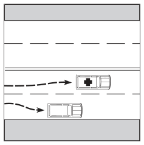
- You are not allowed to follow within 500 feet of a fire truck answering an alarm or an ambulance when the flashing red lights are on.
- Do not drive or park on the street where the fire truck has answered an alarm.
- Do not park in a location that interferes with the arrival or departure of an ambulance to or from the scene of an emergency.
Unless otherwise directed by a law enforcement officer, drivers who approach a stopped emergency vehicle with its lights activated must:
- Vacate the lane closest to the emergency vehicle if the highway has two or more lanes traveling in the direction of the emergency vehicle;
- Slow to a speed not more than 20 mph less than the posted speed limit when the posted speed limit is 25 mph or more; or
- Slow to a speed less than 5 mph when the posted speed limit is less than 25 mph.
Yield Right-of-Way to School Buses

Stop · SCHOOL BUS
You must yield the right-of-way to school buses. Always drive with care when you are near a school bus. If you approach a school bus from either direction and the bus is displaying alternately flashing red lights, you must stop. Do not pass the school bus until:
- The school bus has resumed motion;
- You are signaled by the driver to proceed; or
- The red lights are no longer flashing.
It is not necessary to stop when passing a school bus on a different road or when on a controlled-access highway where the bus is stopped in a loading zone and pedestrians aren’t permitted to cross. A person who fails to obey the law regarding yielding the right-of-way to school buses displaying alternating, flashing lights is subject to the penalties listed in Table 17.
| Conviction | Penalty |
|---|---|
| 1st conviction | A fine of $500 - $1,250. |
| 2nd conviction and every conviction after (within 5 years) | A fine not less than $1000 or more than $2000, possible suspension of driver license for up to six months. |
| Person causes serious bodily injury to another when passing a stopped school bus | Class A misdemeanor punishable by a fine of up to $4,000 and/or up to one year in jail. |
| Person causes serious bodily injury to another and has previously been convicted of passing a school bus and causing serious bodily injury | State jail felony punishable by 180 days to 2 years confinement and a possible fine of up to $10,000. |
Yield the Right-of-Way to Pedestrians (Persons on Foot)
Avoid Turning a Car into a Deadly Weapon
You should always be on the lookout for individuals who are on foot (pedestrians) whether they have the right-of-way or not. Drivers must give the right-of-way to pedestrians:
- At an uncontrolled intersection (there are not any traffic signs or signals for the pedestrian to enter the crosswalk)
-
If the pedestrian has a WALK signal or
- If there is not a pedestrian control signal, give the pedestrian the right-of-way on a green light.
- If the light changes after the pedestrian has entered the crosswalk, still give the pedestrian the right-of-way.
Yield Here to Pedestrian Signs
The “Yield Here to Pedestrians” sign is used when yield lines are used in advance of a marked crosswalk that crosses an uncontrolled multi-lane roadway.
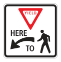
In-Street and Overhead Pedestrian Crossing Signs
The “In-Street Pedestrian Crossing” signs or the “Overhead Pedestrian Crossing” signs may be used to remind road users of laws regarding right-of-way at a pedestrian crosswalk without signals.
The “In-Street Pedestrian Crossing” signs are placed in the road at the crosswalk location on the center line, on a lane line, or on a median island. The “In-Street Pedestrian Crossing” signs will not be posted on the left- or right-hand side of the road.
The “Overhead Pedestrian Crossing” signs are placed over the roadway at the crosswalk.
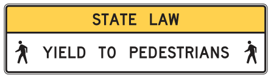
Pedestrian Hybrid Beacons
A pedestrian hybrid beacon is a special type of pedestrian activated warning device used with signs and pavement markings to warn and control traffic at locations where pedestrians enter or cross a street or highway. Pedestrian hybrid beacons are only installed at a marked crosswalk.
Pedestrian Crossing Signals
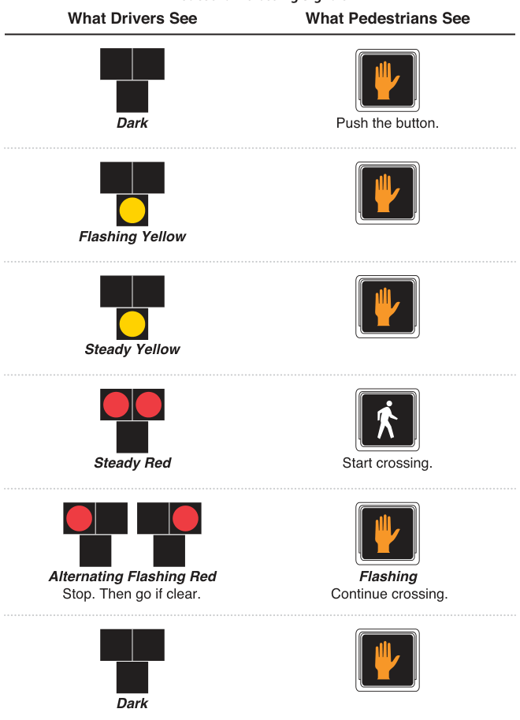
What Drivers See · What Pedestrians See · Dark · Push the button. · Flashing Yellow · Steady Yellow · Steady Red · Start crossing. · Alternating Flashing Red · Flashing · Stop. Then go if clear. · Continue crossing.
In-Roadway Lights
In-roadway lights are special types of lights installed in the roadway surface to warn roadway users they are approaching a condition on or near the road they may not see, which might require them to slow down or come to a complete stop. In-roadway lights are used as an alternative to traffic lights where pedestrian safety is a concern, and are typically placed at midblock crossings, school crosswalks, marked crosswalks on uncontrolled approaches, or in advance of roundabouts.
Image source: Some images in this chapter are courtesy of The MUTCD, 2009 Edition, published by FHWA at mutcd.fhwa.dot.gov/pdfs/2009/pdf_index.htm